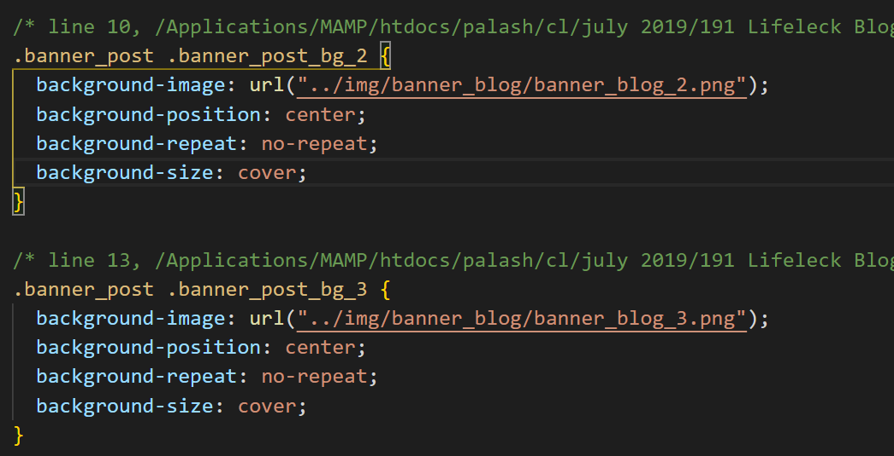

期末說明：
1. 解決win10 黑頻問題QQ
2. ** 全域搜尋 ** !!! 因為太常出錯了，所以學會了全域搜尋，ctrl + shift +F，找到了在用ctrl+click去編輯
3. 改善期中版面跑掉的問題，footer與上面的距離，了解到設定不需要的link為# ，就不會跑到我不想要呈現的頁面，然後用搜尋與取代全部，像這樣

4. 想改像主頁面的三個圖，但發現html裡沒有，使用全域搜尋找到該檔按該位置，發現圖片被埋在CSS裡，所以自行更改到html裡，好連接資料庫
5. 更新履歷表，我要畢業了，歡迎老師介紹工作給我 哈哈
心得分享：
遇到的ERROR，完全數不完 哈哈，但不能不會看LOG，所以都自己解決，遇到最討厭的大概是不小心命名相同變數，在函數中，又命名相同的變數，他抓到函數外的變數，log沒出錯，但網頁跑不出來=.=
後來改了變數開頭大小寫，才把他們區分
後面發現如果view裡的也像其他資料夾中的檔案命名，哪一頁需要連結資料庫，檔案命名也改為像demoView.ejs這樣，我覺得會更讓人不混淆，更能知道整個延後端的連結。